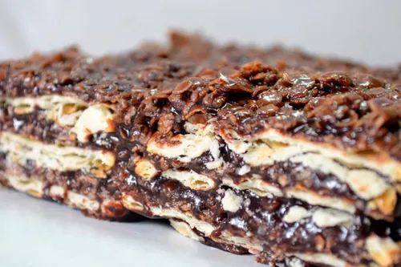

Recetas Caseras
Inicio
Chocolina
Turron de Quaker
Tiramisu
Lemon Pie
Turron de Quaker

Ingredientes:
200 gramos de manteca
400 gramos de avena Quaker
500 gramos de dulce de leche
1 paquete de galletas saladas tipo Cracker
200 ml. de agua caliente
3 cucharadas soperas de azúcar blanca
Receta:
1- Para comenzar con este turrón de Quaker clásico, lleva la manteca a un recipiente para calentar y deshazla lentamente. Cuando ya esté completamente derretida, añade el cacao en polvo y remueve la mezcla hasta formar una crema, tenlo a fuego lento para no alterar la manteca.
2- Añade también el azúcar y continúa removiendo para que cada ingrediente se vaya integrando perfectamente. No necesita más dulce, puesto que el dulce de leche ya aporta ese elemento extra de dulzor.
3- Ahora, vierte el dulce de leche y sigue removiendo con sumo cuidado, percibirás un aromático olor a chocolate muy atrayente.
4- Agrega la avena poco a poco y ve removiendo hasta que quede totalmente fusionada con el resto de la preparación. Apaga el fuego y remueve durante tres minutos más.
5- Forra el fondo del recipiente que vayas a utilizar con papel film. No cortes lo sobrante del film, esto va a servir para que el turrón salga con mayor facilidad a la hora de desmoldarlo. Ve poniendo capas de galletas al fondo del recipiente, puede que necesites romper algunas para cubrir los huequitos que sobren. Vierte la crema de chocolate sobre las galletas.
6- Ve poniendo una capa de galletas y una de crema hasta completar 4 capas. Debes terminar en una de chocolate. Envuelve con el film sobrante y lleva a la nevera para que se enfríe y puedas cortar tu turrón de Quaker sin cocción; con una hora bastará.
7- Tu turrón de Quaker fácil quedará exquisito y seguro que te pedirán prepararlo más de una vez. Puedes conservarlo en la nevera por varias semanas.